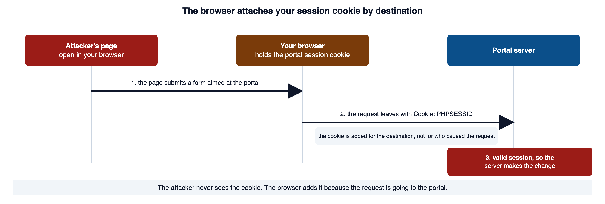
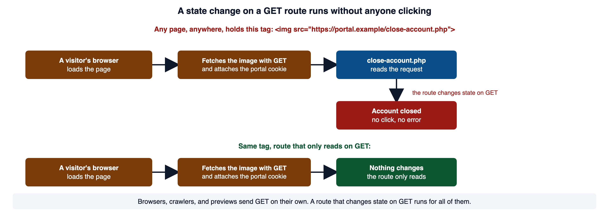
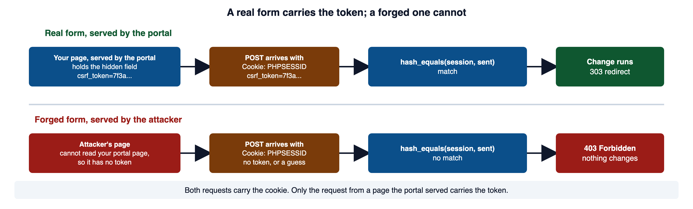
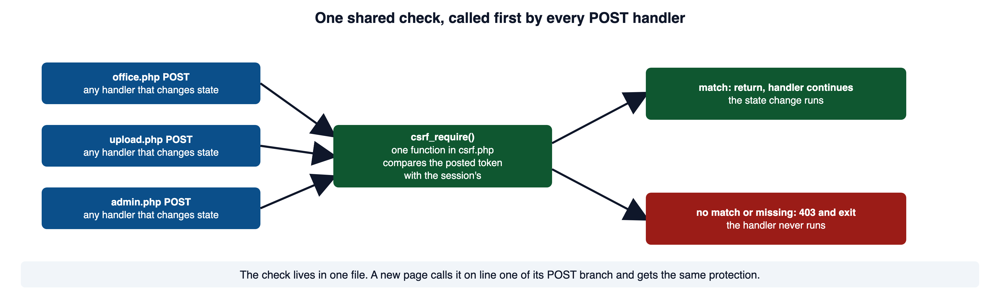
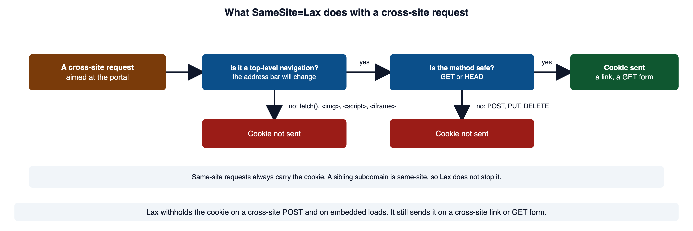
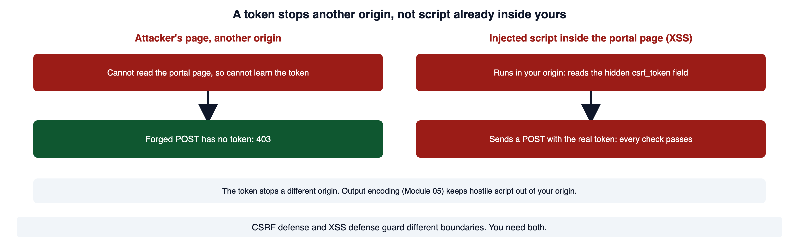

A staff member keeps the portal open while visiting another page. A request arriving with a valid session cookie may identify that browser without proving the staff member intended a change. This module adds the missing intent check to state-changing requests.
Read this page with your course environment open, so you can type each example into a small PHP file and watch what it does. Red code blocks show a shape to recognize and never ship. Green code blocks show the pattern to copy.
1Required reading
These three are required reading for the module. This page teaches everything the assignment and the quiz need; the readings give the same material in the industry's own words, which is what a scanner finding, a CVE advisory, or a bug report will use.
- OWASP Top 10:2025 A01 Broken Access Control. The category CSRF is filed under. Its list of mapped weaknesses includes CWE-352.
- OWASP Cross-Site Request Forgery Prevention Cheat Sheet. The operative reference for this module: the synchronizer token,
SameSite, origin checks, and the limits of each. - CLARK: Session-based vulnerabilities, Frank Zhu and Heather Lipford. Courseware on session hijacking, the other way an attacker uses a session that is not theirs. Its authors wrote it to be paired with a CSRF module.
2The browser sends your session cookie by destination
After you sign in, the portal knows you by a session cookie. Module 01 section 6 called this ambient authority: the browser attaches the cookie to every request bound for the portal, and it decides to attach it from where the request is going, never from what caused the request. A page on evil.example can make your browser send a request to portal.example, and the cookie rides along.
That is the whole mechanism behind cross-site request forgery (CWE-352). MITRE's definition: the application does not, or cannot, sufficiently verify whether a request was intentionally provided by the user who sent it.

The attacker never learns the cookie's value. They do not need to. The browser's same-origin policy lets a page on one origin send a request to another origin (a link, a redirect, a form submission). What it stops is reading the response. MDN puts it as cross-origin writes are typically allowed and cross-origin reads are typically disallowed.
So the attacker can cause the request to be sent, fully authenticated, with any body they choose, and cannot see the answer. That is why CSRF goes after actions that change state. The attacker does not need to read the response when the action itself was the goal.
| Question | Answered by | How |
|---|---|---|
| Who is this? | authentication | the session cookie names an account |
| May they do this? | authorization | a policy check against the object |
| Did they mean to? | CSRF defense | a value the attacker's page cannot read or set |
For a forged request the first two answers are yes. Only the third can tell that the request was never intended.
CWE-352: Cross-Site Request Forgery (CSRF) is the formal entry, and its definition is quoted above. MDN: Same-origin policy defines an origin and lists which cross-origin writes are allowed.
3A request that is authenticated, authorized, and still forged
Suppose the portal had a page that lets a signed-in rep change their own home office. It reuses the real helpers from the portal's auth.php and db.php.
<?php
// WHY: A prepared query controls SQL syntax but does not enforce ownership when the required owner condition is absent.
require_once __DIR__ . '/db.php';
require_once __DIR__ . '/auth.php';
auth_require_login();
if ($_SERVER['REQUEST_METHOD'] === 'POST') {
$office = $_POST['home_office'] ?? '';
$stmt = db()->prepare('UPDATE users SET home_office = ? WHERE username = ?');
$stmt->execute([$office, auth_username()]);
header('Location: profile.php');
exit;
}Vulnerable. Why: A prepared query controls SQL syntax but does not enforce ownership when the required owner condition is absent.
Read what is right about this before what is wrong. It requires a login. The query is a prepared statement, so there is no injection (Module 04). It updates only the signed-in rep's own row, so there is no object-level authorization defect. It would pass a review that asked whether the route is authenticated and touches the correct row.
What it has no way to check is whether the request came from the portal's own form. An attacker writes a page with a form that posts to the route.
<form action="https://portal.example/office.php" method="POST">
<input type="hidden" name="home_office" value="Nowhere">
<button>Claim your prize</button>
</form>When a signed-in rep opens that page and clicks the button, the browser assembles this request.
POST /office.php HTTP/1.1
Host: portal.example
Origin: https://evil.example
Content-Type: application/x-www-form-urlencoded
Cookie: PHPSESSID=2ec651cbaff77ef42200c50194e79c5d
home_office=NowhereCompare that forged request with the one the portal's own form sends. The two differ in the Origin header and in nothing else that the server checks. Both carry the cookie. Neither carries anything that could only have come from a page the portal served. The Network panel of your browser's developer tools shows two requests side by side; the Orientation page Requests and Developer Tools covers how to open it and read a request's headers and body.
When CSRF does not apply. CSRF depends on a credential the browser attaches by itself. An API that authenticates with an Authorization header, which client code adds to each request on purpose, is not open to this attack in the same way, because a cross-site page has no way to make the browser add that header. This is not a general exemption. A cookie used anywhere in the flow brings the exposure back.
The CSRF cheat sheet names the same three facts: the attack needs cookie-based session handling, a request the attacker can predict, and an action worth forging. PortSwigger: What is CSRF lists those three conditions in the same words and is the independent second source.
4Safe and unsafe HTTP methods
The HTTP standard says which methods are read-only. RFC 9110 defines GET, HEAD, OPTIONS, and TRACE as safe, meaning their semantics are essentially read-only. It draws the line so that automated retrieval (spiders) and prefetching can run safely, with no human deciding to send each request.
Here is what happens when a state change sits on a GET route and someone puts this tag on any page in the world.
<img src="https://portal.example/close-account.php">Every visitor's browser fetches that image with GET, carrying their portal cookie, before anyone decides to click anything.

Choosing an unsafe method is necessary. It is not sufficient.
RFC 9110, section 9.2.1 Safe Methods is the standard quoted above, including the rule that the resource owner must disable an action when it is reached by a safe method.
5The synchronizer token pattern
The defense is to require a value in the request that the attacker's page cannot obtain and cannot guess. The cheat sheet calls this the synchronizer token pattern and lists it as the primary defense for an application that keeps server-side sessions, which the portal does.
Three steps carry the pattern. First, mint the token once per session and keep it in the session, where only the server can read it.
<?php
// WHY: Cryptographic random bytes avoid predictable values for security-sensitive identifiers.
session_start();
if (!isset($_SESSION['csrf_token'])) {
// 32 random bytes from the CSPRNG, written as 64 hex characters.
$_SESSION['csrf_token'] = bin2hex(random_bytes(32));
}
echo $_SESSION['csrf_token'], "\n";Secure. Why: Cryptographic random bytes avoid predictable values for security-sensitive identifiers.
d277a38afc85329164c4be770e938a1670137fa5fc295bf320290e64f7c96ab3random_bytes() returns raw bytes, which the manual warns may be unprintable or invalid UTF-8. bin2hex() writes each byte as two hexadecimal characters, so the value is safe to put in a form.
Second, place the token in the form as a hidden field, encoded for the attribute it lands in (Module 03 section 6).
<?php
// WHY: HTML encoding represents special characters as data at the HTML output location. $token = htmlspecialchars($_SESSION['csrf_token'], ENT_QUOTES | ENT_SUBSTITUTE, 'UTF-8'); ?>
<input type="hidden" name="csrf_token" value="<?= $token ?>">Secure. Why: HTML encoding represents special characters as data at the HTML output location. $token = htmlspecialchars($_SESSION['csrf_token'], ENT_QUOTES | ENT_SUBSTITUTE, 'UTF-8'); ?>
Third, on submission, compare the returned value with the session's, before any state change.
<?php
// WHY: The string comparison avoids numeric-string coercion in the secret check.
$sent = $_POST['csrf_token'] ?? null;
$expected = $_SESSION['csrf_token'] ?? null;
if (!is_string($sent) || !is_string($expected) || !hash_equals($expected, $sent)) {
http_response_code(403);
exit('Request denied');
}
// Only past this point is the state change allowed to run.Secure. Why: The string comparison avoids numeric-string coercion in the secret check.
A request whose token is missing, malformed, or wrong never reaches the code that changes state. It gets a short denial and stops.
HTTP/1.1 403 Forbidden
Request deniedhash_equals() is the comparison for a secret, not == and not ===. Module 03 section 8 showed that == converts both sides first, so "1e3" == "1000" is true. hash_equals("1e3", "1000") is false. The manual adds the second reason: a plain comparison stops at the first byte that differs, so the time it takes leaks how much of the secret was right. hash_equals() takes the same time either way.

Three properties carry the whole defense. Drop any one and the defense is gone.
- Unpredictable. It comes from a CSPRNG, never from
rand(),mt_rand(),uniqid(), or a timestamp, so it cannot be guessed or derived. - Bound to the authenticated session. It lives in the session, so a token minted for one session is rejected when it is replayed against another.
- Checked on the server, before the change. The comparison runs on the server and fails closed on a missing or malformed value. A check the client could skip is no check at all.
Why the attacker cannot win this. The token sits in the session and in a page your origin served. The attacker's page can cause a request, and the same-origin policy keeps it from reading your page to learn the token. Thirty-two random bytes are not guessable in any useful time. The defense holds because the browser's own isolation denies the attacker the one value the request must contain.
PHP Manual: random_bytes documents the CSPRNG sources and the exception thrown when none is available. PHP Manual: bin2hex and PHP Manual: hash_equals document the two helpers, including the argument order and the timing note.
6One shared check that every POST handler calls
Section 5 gave the three steps as separate snippets. Pasting them into each page is how one page gets missed. The portal's lib/ folder already holds shared helpers for passwords, signing, and queries, each with a header stating what it does. A token check belongs in the same style: one file, three small functions, called by every page that changes state.
<?php
// WHY: HTML encoding represents special characters as data at the HTML output location.
/**
* One anti-forgery check for every POST handler in the portal.
*
* csrf_token() returns this session's token, minting it on first use.
* csrf_field() returns the hidden input to place inside every POST form.
* csrf_require() stops the request with 403 unless the posted token matches.
*/
function csrf_token(): string
{
if (session_status() === PHP_SESSION_NONE) {
session_start();
}
if (!isset($_SESSION['csrf_token'])) {
$_SESSION['csrf_token'] = bin2hex(random_bytes(32));
}
return $_SESSION['csrf_token'];
}
function csrf_field(): string
{
return '<input type="hidden" name="csrf_token" value="'
. htmlspecialchars(csrf_token(), ENT_QUOTES | ENT_SUBSTITUTE, 'UTF-8')
. '">';
}
function csrf_require(): void
{
$sent = $_POST['csrf_token'] ?? null;
$expected = $_SESSION['csrf_token'] ?? null;
if (!is_string($sent) || !is_string($expected) || !hash_equals($expected, $sent)) {
http_response_code(403);
exit('Request denied');
}
}Secure. Why: HTML encoding represents special characters as data at the HTML output location.
A page uses it in two places: once in the form, once on the first line of its POST branch. Here is the home-office page from section 3, repaired.
<?php
// WHY: Placeholders keep bound values separate from the SQL statement structure.
require_once __DIR__ . '/db.php';
require_once __DIR__ . '/auth.php';
require_once __DIR__ . '/csrf.php';
auth_require_login();
if ($_SERVER['REQUEST_METHOD'] === 'POST') {
csrf_require(); // nothing below runs without a matching token
$office = $_POST['home_office'] ?? '';
$stmt = db()->prepare('UPDATE users SET home_office = ? WHERE username = ?');
$stmt->execute([$office, auth_username()]);
header('Location: profile.php', true, 303);
exit;
}
?>
<form method="post" action="office.php">
<?= csrf_field() ?>
<label>Home office <input name="home_office"></label>
<button type="submit">Save</button>
</form>Secure. Why: Placeholders keep bound values separate from the SQL statement structure.

Run against that page with curl, the responses are these. The page requires a signed-in session, so the first request signs in and saves the session cookie; the second fetches the form with that cookie, and the token in the hidden field is the one the session holds.
curl -s -c jar.txt -d 'username=rmarsh&password=password' http://127.0.0.1:8080/login.php
curl -s -b jar.txt -c jar.txt http://127.0.0.1:8080/office.php | grep csrf_token<input type="hidden" name="csrf_token" value="5207755d303efbb2789e864f62b5fb75669689c922c5c2683a473480e6f7f423">A POST with the cookie and no token, or a guessed token, stops at the check.
curl -i -b jar.txt -d 'home_office=Irvine&csrf_token=abc' http://127.0.0.1:8080/office.phpHTTP/1.1 403 Forbidden
Content-type: text/html; charset=UTF-8
Request deniedThe same POST with the session's own token passes the check and the change runs.
curl -i -b jar.txt -d 'home_office=Irvine&csrf_token=5207755d303efbb2789e864f62b5fb75669689c922c5c2683a473480e6f7f423' http://127.0.0.1:8080/office.phpHTTP/1.1 303 See Other
Location: profile.phpAnd the valid token sent with a different signed-in session's cookie (a second sign-in saved to jar2.txt), which is what a token replayed from another session looks like, is refused, because that session holds a different token.
curl -i -b jar2.txt -d 'home_office=Irvine&csrf_token=5207755d303efbb2789e864f62b5fb75669689c922c5c2683a473480e6f7f423' http://127.0.0.1:8080/office.phpHTTP/1.1 403 Forbidden
Content-type: text/html; charset=UTF-8
Request deniedThe OWASP CSRF Prevention Cheat Sheet, synchronizer token pattern is the source for the pattern, its token requirements, and the stateful versus stateless split. W3Schools: PHP Sessions has runnable examples of session_start() and $_SESSION, which the helper relies on.
7SameSite and the session cookie
The SameSite cookie attribute tells the browser whether to attach a cookie to a cross-site request at all. Setting it is defense in depth behind the token. Here is what MDN says each value does.
| Value | What the browser does |
|---|---|
Strict | sends the cookie only for requests that originate from the same site that set it |
Lax | sends it for same-site requests, and for a cross-site request only when the request is both a top-level navigation and uses a safe method |
None | sends it with every request, cross-site included; the cookie must also carry Secure |
What Lax withholds the cookie from, exactly:
- any cross-site request that is not a top-level navigation: a
fetch()call, an<img>or<script>load, or a navigation inside an<iframe>; - any cross-site top-level navigation that uses
POST,PUT, orDELETE, which includes the forged form in section 3.
What Lax still sends the cookie with: a cross-site top-level navigation using a safe method. That is a link you click from another site, an assignment to document.location, or a GET form submission. So a route that changes state on GET is still exposed under Lax, which is one more reason for section 4.

Set the attributes before the session starts, because a cookie that has already been sent cannot be re-flagged. The manual says the call lasts for one request, so it runs before session_start() on every page.
<?php
// WHY: The SameSite and HttpOnly attributes reduce particular cookie exposures; they complement the request-specific intent check.
session_set_cookie_params([
'samesite' => 'Lax',
'httponly' => true,
]);
session_start();Secure. Why: The SameSite and HttpOnly attributes reduce particular cookie exposures; they complement the request-specific intent check.
Set-Cookie: PHPSESSID=2ec651cbaff77ef42200c50194e79c5d; path=/; HttpOnly; SameSite=LaxLax blocks the cross-site POST from section 3 in a browser that honors the attribute, which is real protection. Treat it as strong defense in depth rather than the whole control, for three reasons the cheat sheet gives. It depends on browser behavior you do not control. It is scoped to the registrable domain, so a page on a sibling subdomain can still send the cookie. And it does nothing for a route that changes state on GET.
HttpOnly is the second attribute to set, and it covers a different threat. MDN says it forbids JavaScript from accessing the cookie through document.cookie, which limits what a cross-site scripting bug can steal (Module 05 section 9). It does not stop CSRF, because the browser still attaches the cookie on its own.
Secure tells the browser to send the cookie only over https:, with an exception MDN notes for localhost. A cookie marked SameSite=None must carry it. Whether to set it on your portal depends on how the portal is reached, which is out of scope for this module.
The MDN Set-Cookie reference is the source for every browser behavior in this section. PHP Manual: session_set_cookie_params documents the array form and the rule that it runs before session_start(), and PHP Manual: session configuration gives the empty default for session.cookie_samesite. The OWASP Session Management Cheat Sheet says session cookies must set SameSite explicitly rather than rely on the browser default.
8Checking the request origin
For a state-changing request the server can also ask where the request came from. The browser answers in headers that page script cannot set.
The cheat sheet's order: if Origin is present, compare it with the origin you expect; if it is absent, fall back to the origin part of Referer; and treat a missing header or Origin: null as no evidence of a same-origin request.
<?php
// WHY: Comparing parsed origin components avoids accepting a different host merely because its text resembles the expected origin.
function origin_matches(string $expected): bool
{
$origin = $_SERVER['HTTP_ORIGIN'] ?? null;
if ($origin === null && isset($_SERVER['HTTP_REFERER'])) {
$p = parse_url($_SERVER['HTTP_REFERER']);
if (isset($p['scheme'], $p['host'])) {
$origin = $p['scheme'] . '://' . $p['host'] . (isset($p['port']) ? ':' . $p['port'] : '');
}
}
return $origin !== null && $origin === $expected;
}Secure. Why: Comparing parsed origin components avoids accepting a different host merely because its text resembles the expected origin.
Run with five request shapes against an expected origin of https://portal.example, it answers:
{"HTTP_ORIGIN":"https://portal.example"} true
{"HTTP_ORIGIN":"https://portal.example.evil.net"} false
{"HTTP_ORIGIN":"null"} false
{"HTTP_REFERER":"https://portal.example/office.php"} true
{} falseSec-Fetch-Site: cross-site on an unsafe method is a signal the server can reject on, and MDN reports the header as available across browsers since March 2023. Older or unusual clients omit it. The cheat sheet makes a fallback to the Origin and Referer check a mandatory part of any Fetch Metadata policy, so write down which clients you expect and what happens when the headers are absent. An origin check of either kind supplements the token. It does not replace it.
MDN: Origin lists when the header is sent and the cases where it is null, which include a page opened from a file: URL. MDN: Sec-Fetch-Site defines the four values. MDN: Referer documents what the referrer policy allows into that header.
9When a token is not enough
A valid token proves a request came from a page your origin served. It does not prove that a human weighed the action, and it does not decide whether this user may perform it at all.
High-impact actions need more than a token. For a password change, a new payment destination, MFA removal, or account deletion, add a check that a person is present and paying attention. The cheat sheet names re-authentication and one-time tokens as the user-interaction defenses, and says not to use a CAPTCHA for this, because a CAPTCHA is built to stop bots, not forged requests. Reserve re-authentication for these costly actions. Loading a page or viewing help text does not call for it.
A token is not authorization. A user can hold a valid token for their own session and still have no right to the object they are acting on. CSRF defense verifies that the request came from your form. A separate authorization check decides permission. Neither substitutes for the other.
Cross-site scripting defeats CSRF defenses. The cheat sheet says it plainly: XSS can defeat all CSRF mitigation techniques. If an attacker can run script on your origin, that script reads the token out of the page and sends the request through your own site. Every signal in the sections above then looks correct, because it is correct. The request came from your page.

The OWASP CSRF Prevention Cheat Sheet, user interaction based defenses is the source for the re-authentication guidance and the XSS statement.
10How you prove the fix works
A fix is a claim until a request that used to succeed now fails. Run this set before and after the change, and keep the output, because it is the evidence a report's confirmation section needs.
| Test | Expected result | What it proves |
|---|---|---|
| Correct session, correct token | the change runs | the control does not break the feature |
| Missing token | 403 | it fails closed on absence |
| Altered token | 403 | the comparison is real |
| Token from another session | 403 | the token is session-bound |
| Cross-site form submission | 403 | the attack itself is blocked |
Wrong Origin header, if you check origins | 403 | the comparison is on the whole origin |
| Absent Fetch Metadata, if you use it | your written fallback | the fallback exists and was chosen |
| Two tabs, both submitting | both succeed | the token policy is usable |
| Signed-in user with a valid token, acting on an object they may not touch | 403 | the token is not authorization |
The last row is the one to keep. The token is valid and the answer is still no, because the token was never the thing that decides permission.
The curl commands in section 6 produce the first four rows. Sign in first so the cookie jar holds a real session.
curl -s -c jar.txt -d 'username=rmarsh&password=password' http://127.0.0.1:8080/login.phpThe cross-site row needs a browser, because the thing under test is what the browser attaches. Open your local attacker page with the portal session active, submit, and read the response in the Network panel. The before capture shows the change landing; the after capture shows 403 Forbidden and no change.
OWASP Web Security Testing Guide: Testing for Cross Site Request Forgery (WSTG-SESS-05) gives the tester's preconditions for the attack and two proof-of-concept forms, which is the cross-site row of this table; it also states that POST alone does not prevent CSRF.
11Common misconceptions
✕"POST prevents CSRF."
A cross-site form submits
POSTwith a script and no click. The method is a prerequisite for the defense, not the defense.✕"The request has a valid session cookie, so it is legitimate."
The browser attaches the cookie by destination. That gap is the entire vulnerability.
✕"A confirmation dialog stops it."
A client-side "are you sure?" runs only on your own page. The forged request never renders it, so the dialog stops nobody.
✕"SameSite solves it."
It is strong and incomplete. Sibling subdomains, state-changing
GETroutes,SameSite=Noneintegrations, a cookie with no attribute, and browsers that do not honor it all sit outside it.✕"The token should be the session ID."
That leaks the session identifier into markup and logs, so a stolen token costs the whole account instead of one request.
✕"CSRF tokens authorize the action."
They show the request came from your form. An authorization check decides permission.
✕"We have tokens, so XSS is less urgent."
It is more urgent, because script inside your origin reads the token and uses it.
✕"Checking the Referer is enough."
A referrer policy can strip the header, and a substring check accepts look-alike hosts. Compare whole origins, define the fallback, and keep the token.
12Check your understanding
Work these before you look at the answers.
- An attacker never learns the value of your session cookie. Why can they still cause an authenticated request to be sent on your behalf?
- Given that an attacker can send a cross-site
POSTanyway, why must a password change never happen onGET? - Name the three properties a synchronizer token must have, and say what fails if each is missing.
- A request arrives with a valid, session-bound CSRF token. Name two things it still does not prove.
- Why does the token comparison use
hash_equals()rather than==? - Your application sets
SameSite=Laxand uses no tokens. Describe a route that is still exploitable, and say whyLaxdoes not cover it. - What does
HttpOnlyprotect against, and why does it not stop CSRF? - A cookie is sent with
SameSite=None. What other attribute must it carry? - An API authenticates with a bearer token in an
Authorizationheader and uses no cookies. Why is it not open to classic CSRF, and what would bring the risk back? - Why does a cross-site scripting bug defeat an otherwise correct CSRF token?
- Why does the portal need one shared
csrf_require()rather than a check pasted into each page?
Answers: (1) the browser attaches the cookie by destination on its own, and the same-origin policy only blocks reading the response, so causing the request is enough. (2) safe methods are sent by prefetchers, crawlers, previews, and <img> tags with no human involved, so a state-changing GET runs with the victim's session and no click; Lax still sends the cookie on it. (3) unpredictable, session-bound, and server-checked, failing respectively to guessing, to replay across sessions, and to a client-side check that never runs. (4) that a human considered the action, and that the user is authorized for the object. (5) == converts both sides first, so unrelated strings can compare equal, and a plain comparison stops at the first differing byte, which leaks how much of the secret was right; hash_equals() compares the whole string in constant time. (6) any state-changing GET, since Lax still attaches the cookie to a cross-site top-level navigation with a safe method; a sibling subdomain is another answer. (7) HttpOnly keeps script from reading the cookie through document.cookie, which limits cross-site scripting theft, and the browser still attaches the cookie itself, so CSRF is unaffected. (8) Secure. (9) the browser does not add an Authorization header on its own, so a cross-site page cannot make the request carry the credential; a cookie used anywhere in the flow brings the risk back. (10) script inside your origin reads the token out of the page and sends the request through your origin, so every origin and token signal is genuinely correct. (11) a check pasted into each page is a check one page forgets; one function called on the first line of every POST branch gives every page, including the next one written, the same protection.
13References and further study
The three required readings in section 1 and the links through the lecture are the main references. Each entry below names what it confirms.
- MDN: Using HTTP cookiesdeveloper.mozilla.org
How the browser decides which cookies to attach, the mechanism under section 2.
- MDN: Fetch metadata request headersdeveloper.mozilla.org
The
Sec-Fetch-*family that section 8 draws on, and why page script cannot forge them. - web.dev: Protect your resources from web attacks with Fetch Metadataweb.dev
, Lukas Weichselbaum. A worked server-side policy that allows same-site and navigational
GETrequests, rejects other cross-site requests, and allows requests from browsers that send noSec-Fetch-*headers, which is the fallback question in section 8. - OWASP Content Security Policy Cheat Sheetcheatsheetseries.owasp.org
The control that limits what injected script can do, relevant to section 9.
- PHP Manual: session_statusphp.net
The check the helper in section 6 runs before
session_start(), so a page that already opened the session is not asked to open it twice.
Videos.